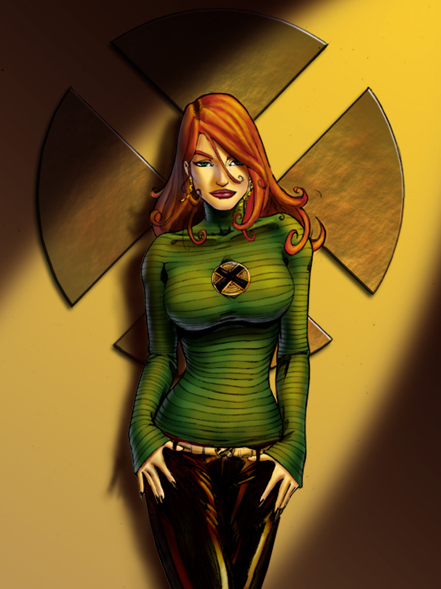
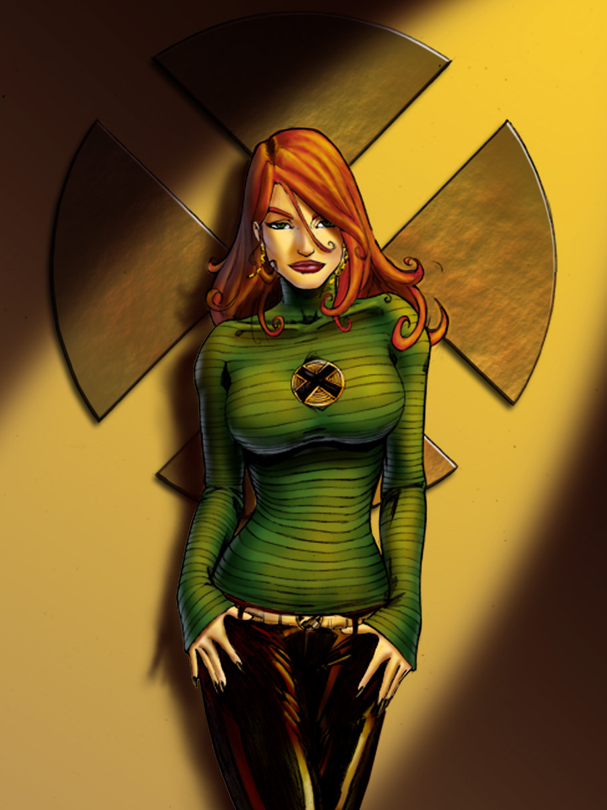
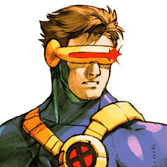

Jean Grey
Power level: Omega-level mutant
Hero description:
She is an important figure in the lives of other Marvel Universe characters, mostly the X-Men, including her husband Cyclops, her mentor and father figure Charles Xavier, her unrequited love interest Wolverine, her best friend and sister-like figure Storm, and her genetic children Rachel Summers, Cable, Stryfe and X-Man.
Abilities: Telepathy Telekinesis The Phoenix Force
Allies:
-
Cyclops
 -
Havok

-
Corsair

-
Storm

Enemies:
- Stryfe
- Genesis
- Emma Frost
- Apocalypse